Monta runs the software behind EV charging infrastructure for the world, powering charging for Toyota, Stellantis, Copenhagen Airport, and many more European providers. I joined as the first UX leader at VP level, hired to formalize the UX practice and strategic product research and scale it without being able to hire our way out. The answer was infrastructure.
Design was a structural bottleneck
Engineers outnumbered designers 10:1. PMs built without design input. Research was ad hoc. Every team had its own tools, processes, and quality bar, with no shared infrastructure to tie them together.
Monta competes for car companies and energy companies daily. Product velocity is existential. The CEO is a three-times-exited founder with one playbook: enter a niche technical space, dominate it with software. Headcount wasn't the answer. Infrastructure was.
The mandate: Build a capability layer that multiplies the people we already have, making every designer, PM, and engineer a better contributor to the product process. Not just a design system. Not just AI tooling. A full stack of interlocking systems.
Two very different kinds of work, one case study.
Most of what follows is the infrastructure and AI transformation I directed: systems, culture, governance, scaled across the whole company. One track stayed hands-on. Pick a track below, or read both.
Don't hire more designers. Make everyone a better one.
The world was already moving toward PMs designing, engineers designing, and agents designing. The question wasn't how to protect design. It was how to raise the floor for everyone doing design work, while freeing senior designers for the work only they could do.
This became a technical architecture: one governed AI backbone, a growing library of shared capabilities, a pipeline that removed the translation layer between design and engineering, and a monitoring system that caught quality drift before it became a problem.
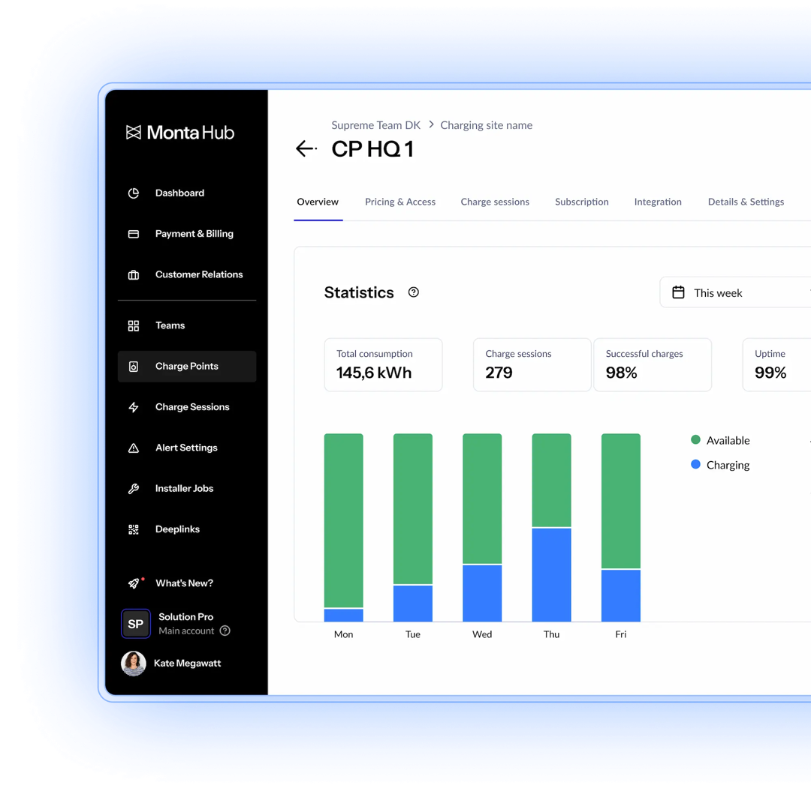
One brand, three products, and a hardware business folded in.
Infrastructure was the mandate, but the product didn't stand still while we built it. Working alongside Monta's Brand Design and Marketing teams, we ran a full rebrand: a unified visual identity and naming system across a portfolio that had grown organically into overlapping internal tools, replacing the old "Portal" era with three clearly scoped products — Monta Hub, Monta Charge, and Monta Control — each rebuilt on the new design system rather than reskinned on top of it.
Hub, Charge, and Control all shipped extensive updates over this period: new account and driver management, live network operations, granular pricing and roaming controls, growth and finance tooling, and no-code workflow automation. Alongside that, we merged key capabilities out of the legacy Hardware Portal — partner API access and device-level developer tooling — directly into Hub and Control, retiring a fourth surface instead of maintaining it in parallel.
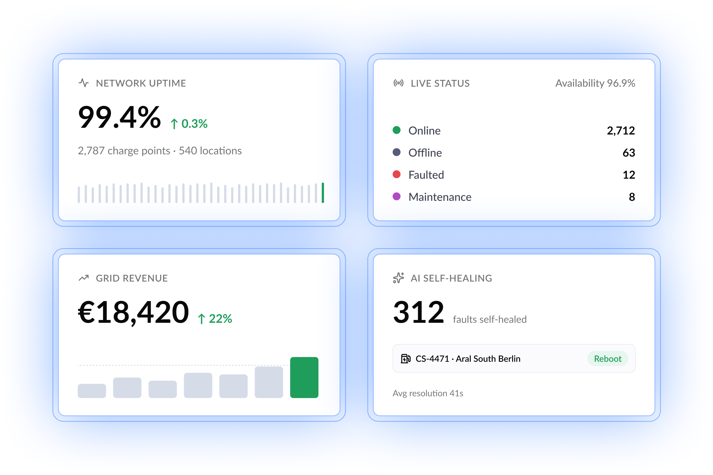
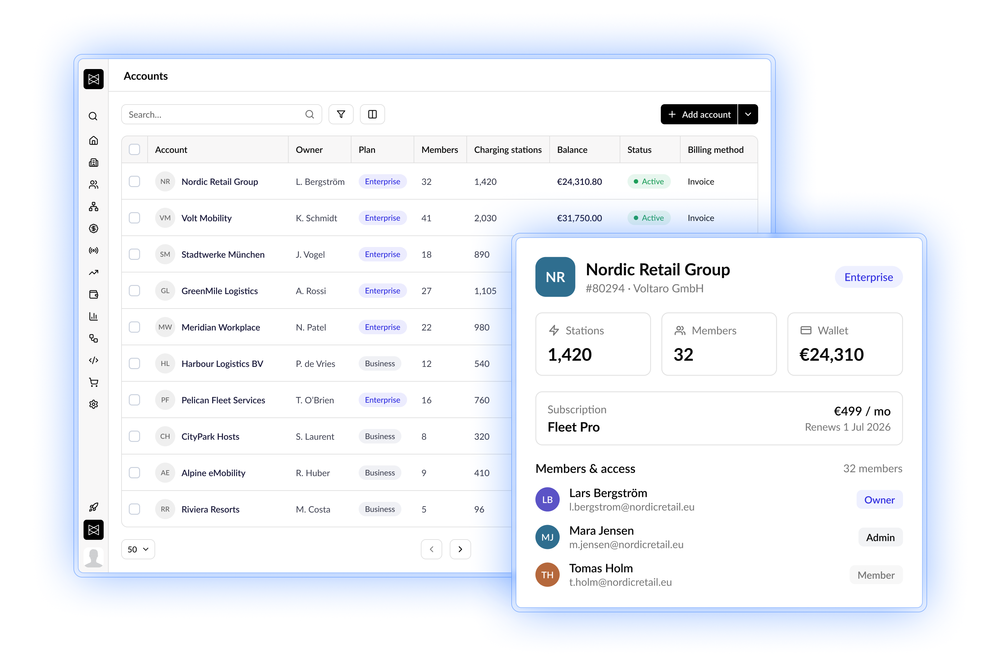
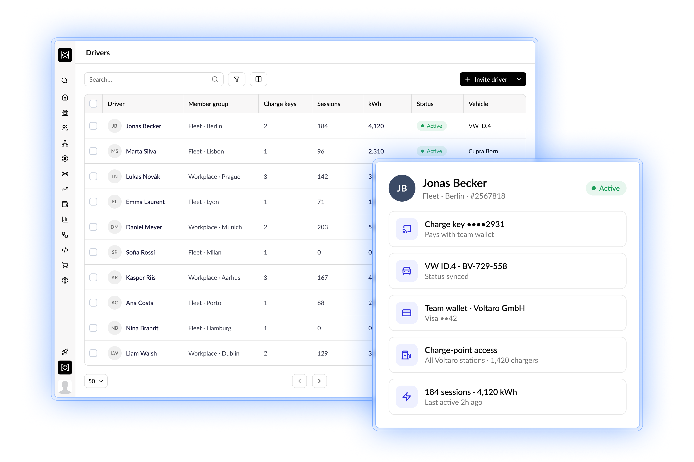
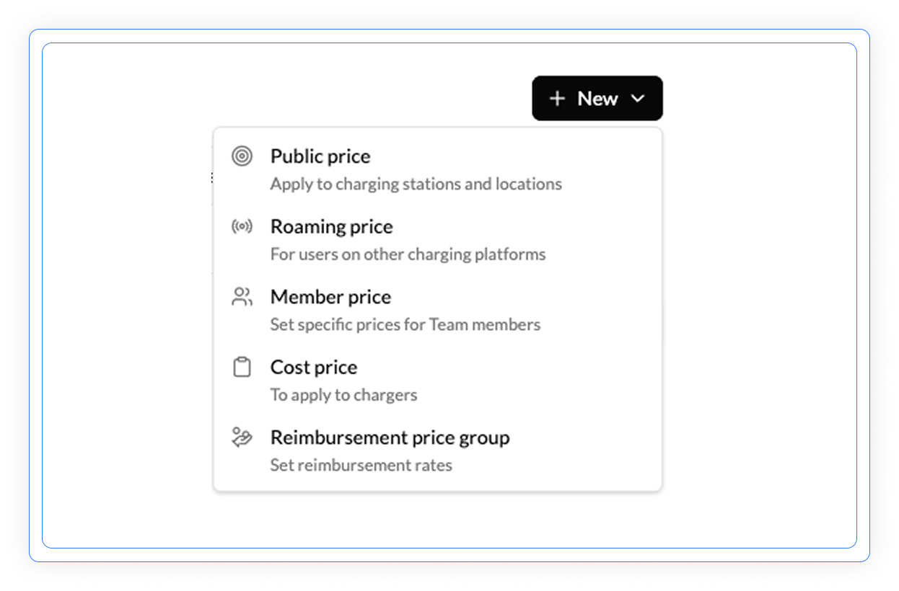
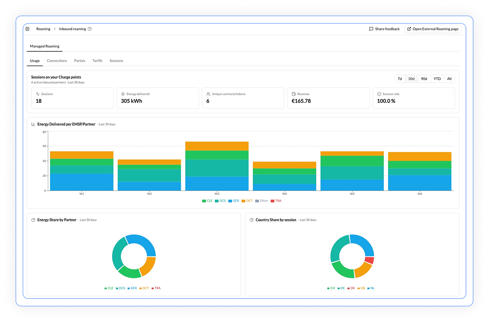
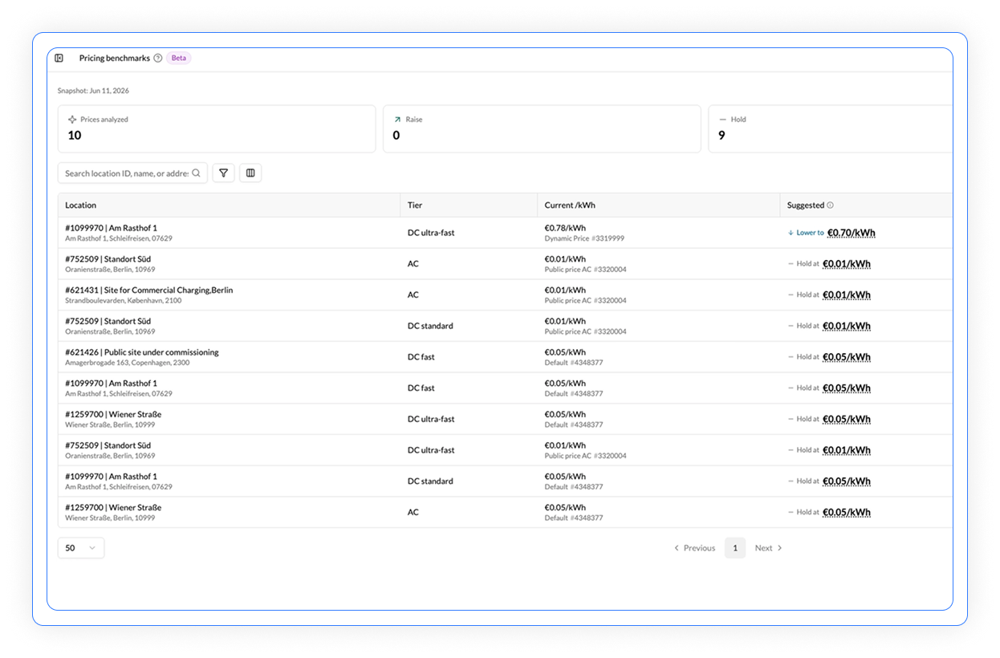
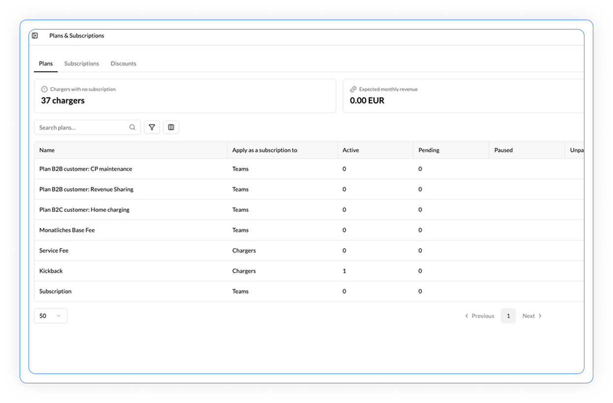
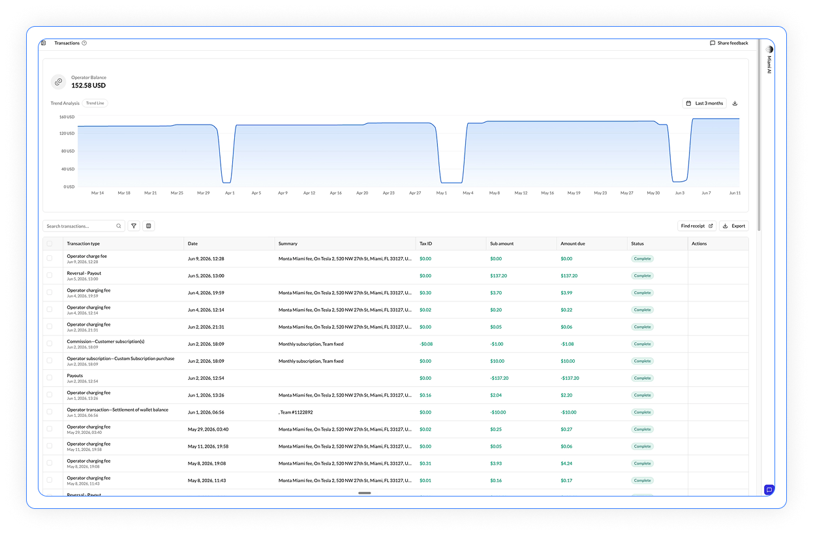
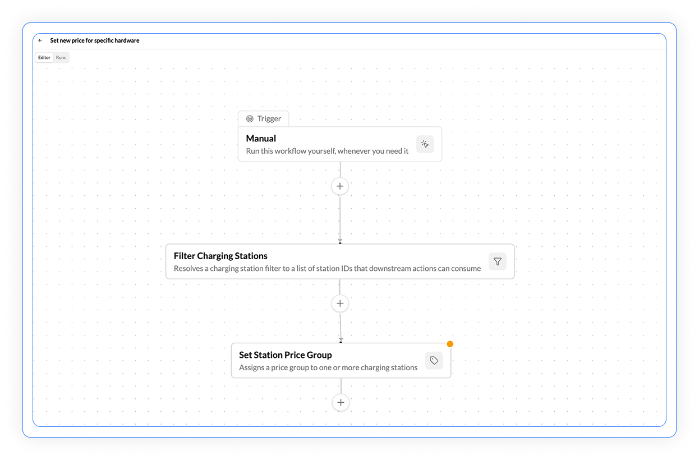
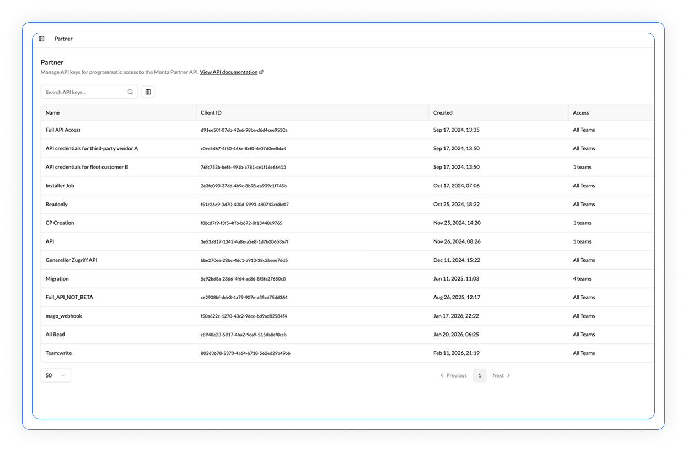
Back to hands-on: the Charge app revamp
My most hands-on product work over this period was the Monta Charge revamp — the driver-facing app for finding, starting, and paying for a charge — done in close partnership with Denise Tan, Product Director, and Johnny Sørensen, VP of Engineering. Everything else in this case study — Hub, Control, the AI infrastructure — I set direction for and let my team own. The Charge app is where I stayed in the work.
The redesign had to reconcile four different ways a driver actually starts a charge: opening a site from the map, tapping a QR sticker on the charger (no account required), tapping an RFID (radio-frequency identification) charge key against the reader, or using a payment terminal directly at the site. Each path re-uses the same pre-authorization and wallet top-up logic underneath, so the driver never sees the seams between them.
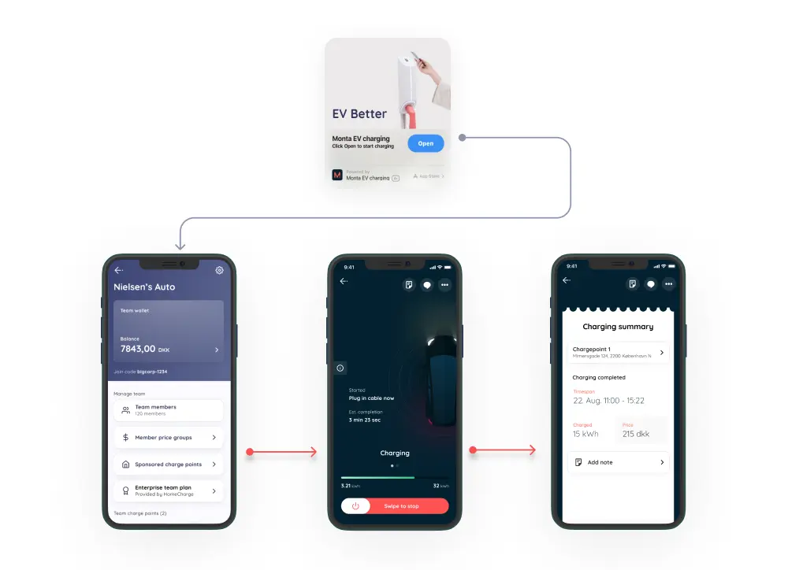
650,000+ public chargers, filterable down to the one that actually works
The map redesign had to do more than drop pins. Drivers filter by availability, charge speed in kW, price (dynamic or fixed), and operator, then get directions straight into Google Maps or Apple Maps. Roaming pushes that further: one integration gives drivers access to over a million charge points across Europe and North America, through partners like Plugsurfing, ABRP, Shell Recharge, and Ionity, without ever leaving the Monta app.
Every way a driver already pays, plus a reason to charge smarter
Payment had to match however a driver already prefers to pay, not force a new habit: the Monta Wallet, credit card, Apple Pay, Google Pay, and regionally MobilePay and Vipps in the Nordics and Twint in Switzerland, all built on partnerships with Stripe, Adyen, and Wise. Smart charging layers on top of that: drivers can set a charge point to only start once conditions are met, low electricity price, low CO2, or a high share of renewable energy on the grid, turning a routine top-up into a small climate and cost decision made automatically instead of something they have to think about.
A public roadmap, and a room full of customers who already knew the answers.
Two initiatives gave us direct signal before we committed engineering resources to the wrong priorities. I helped launch Monta's public roadmap, where customers submit and vote on features directly, feeding straight into the Sense stage of the ADLC (Agentic Development Lifecycle) system below. I also helped stand up a Customer Advisory Board (CAB): a small group of our best customers, meeting on a regular cadence, giving us first access to what would actually make them renew, upsell, or switch to a competitor, and where pricing made sense before we changed it.
The CAB paid for itself as more than an advisory panel. It doubled as our built-in alpha and beta test group, and became a community in its own right — members compared notes with each other on shared challenges as much as they gave us feedback. It's the same customer advisory board model run by DoorDash, Airbnb, Intuit QuickBooks, Adobe, and Mailchimp: get the people who'd feel a bad decision first into the room before it ships.
Four systems. One backbone.
Each system compounds on the others. Together they form a complete capability layer, from individual contributors to the automated product lifecycle.
The AI backbone of the organisation
An API gateway giving every employee governed, air-gapped access to Claude, connected to every internal data source. We run the Danish power grid. Data cannot leave. Bridge gave us full Claude intelligence against live internal data while keeping everything within our VPN (virtual private network) perimeter: GDPR (General Data Protection Regulation) compliance by architecture, not by policy.
250+ shared capabilities across every department
Pre-built Claude capabilities scoped to a role or task. Any employee could build and publish one. The generative UI skills read the live design system, pulled real Storybook components, and generated production-ready code in the actual stack. Output: a merge-ready PR (pull request) that could go to QA that day. Sales reps generated custom demos without touching product.
We eliminated the handoff. Entirely.
The traditional design → spec → eng → QA → prod cycle replaced with a model where designers and engineers operate as peers in the same codebase. We run one of the largest Flutter apps outside Google, writing ~30% of its open-source code. PMs define Fibonacci 1–3 point scope. No mediation between design and engineering. Honest trade-off: governance had to catch up with velocity.
You can't govern what you can't see
Token usage dashboard by role, region, and seniority. Deeper telemetry than a standard deployment, surfacing the most common request types clustered by team, and similar-but-different prompts to unify as shared skills. Weekly: top 50 usage patterns reviewed. Cherry-picked patterns promoted to shared skills, diverging teams flagged before quality became a problem.
The infrastructure above was for the whole company. This is what it did to my own team.
Bridge and the Skills Library weren't just an engineering story. My designers and researchers used them to change how the craft itself gets done: running research and synthesizing findings faster, investigating causation and correlation in usage data instead of stopping at the correlation, generating and iterating on mockups, building coded prototypes to pressure-test an idea before it reached engineering, and in a growing number of cases, shipping coded improvements straight to the app and Hub themselves.
I got back into it personally. After years of the job being mostly strategy and people, I started shipping code again — building coded prototypes for the Charge app and Hub, and doing the design system work in the codebase, not just the Figma library. Updating tokens, components, and documentation as code, not as a visual reference engineering had to interpret.
Faster studies, same rigor
AI-assisted synthesis across interview transcripts, support tickets, and usability sessions, cutting the time from raw data to a shareable insight from days to hours.
Causation, not just correlation
Researchers used Bridge against live product data to test causal hypotheses behind usage patterns, instead of stopping at a dashboard correlation and calling it a finding.
Mockups to coded prototypes
Designers moved from static mockups to interactive, coded prototypes built against the real design system, testable with users before an engineer ever picked up the ticket.
Designers shipping production code
The strongest prototypes didn't get thrown away and rebuilt: they went into PRs. A growing share of app and Hub improvements shipped directly from design, reviewed like any other change.
30 agents. 90% of the product lifecycle automated.
Inspired by Booking.com's experimentation culture and built for an AI-native context. Signal detection to production deployment to performance verification: a closed loop where every measurement feeds the next round of signals.
Signal sources included social media comments, App Store reviews in all markets and languages, SDR (sales development rep), AE (account executive), and CSM (customer success manager) touchpoints, public roadmap submissions (roadmap.monta.com), PostHog analytics, and support ticket clusters. Everything connected. Nothing manually entered. The biggest challenge stopped being "how do we get people to use AI" and became "where should we not use AI." That's when you know infrastructure worked.
Four AI agents shipped from internal infrastructure.
None would have shipped without Bridge, the Skills Library, and the monitoring system as the foundation. Each agent was a product in its own right, built on the same capability layer the internal team used daily.
Driver Support Agent
Autonomous customer support covering all 11 supported languages, resolving the majority of driver issues without human escalation.
NOC (Network Operations Center) Agent
Autonomous infrastructure monitoring and response, reducing manual intervention in grid-connected operations.
Data Agent
Natural language to SQL: enabling any team member to query operational data without engineering dependency or SQL knowledge.
Knowledge Agent
Institutional memory at scale: surfacing relevant historical decisions, patterns, and precedents across the codebase, design system, and documentation.
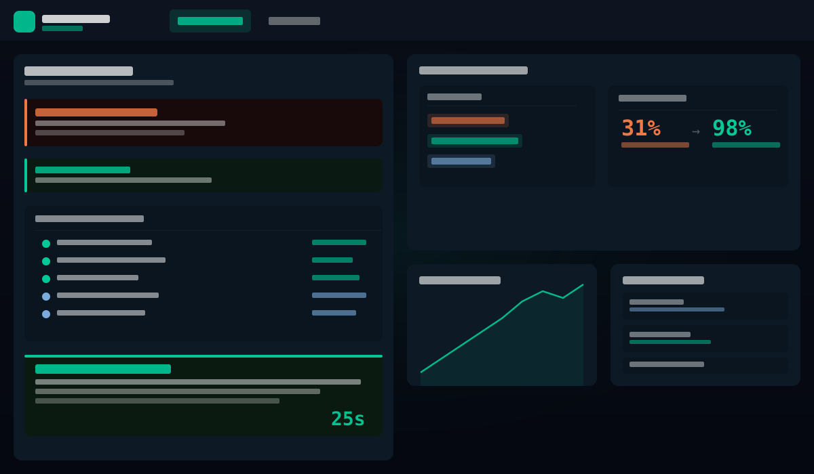
Five education programs. Two leaders. One direction.
88% weekly AI usage didn't happen by mandate. It happened through five structured programs, none of which were required.
AI & Automation Huddles
Company-wide sessions led by Brian Rountree (VP Engineering, AI & Automation). Strategic direction, tooling decisions, infrastructure updates, cross-department use cases.
Design×Claude Weekly Training
Not lectures: actual building. Live prompt engineering, skill creation, running agents, querying real data via Bridge. Every participant left with something working they'd built themselves.
AI Show & Tell
Open mic format. Volunteers signed up via open agenda. Anyone showed what they'd built, what worked, what failed. No hierarchy. Best ideas spread because people saw peers doing real things.
AMAs with AI Experts
External experts for Ask Me Anything sessions on advanced prompt engineering, LLM fundamentals, AI ethics, and governance. Addressed the "mountain of unknown unknowns" causing paralysis in less experienced roles.
AI Ambassadors
One per function. Bridged central infrastructure decisions and day-to-day team needs. Fed insights back into roundtables. Helped less experienced members overcome initial paralysis in a context they trusted.
External Trainers
Organised the Product offsite with Booking.com, ABSmartly, and PostHog trainers on experimentation methodology and AI data analysis, giving the Product team rigour that fed directly into the ADLC system.
Restructure the team you have. Borrow the rest.
I joined as the first UX leader at VP level, but I didn't grow headcount to get there — I restructured the team already in place and leaned hard on cross-functional partners to move fast. Monta is a deep-tech company: charging hardware, grid protocols, payment rails. Progress meant working through the people who already understood that domain — engineers, the CMO, the VP of Customer Experience, and my Engineering peers — not routing everything through new design hires.
AI fluency changed what every role meant regardless. I led the rewrite of every role definition, level framework, and JD (job description) across design, research, and content, defining what good looked like in an AI-native team, what player-coaches owned, and how to evaluate people in a world where everyone ships code.
The last thing I built: automated playbooks that shipped after I'd already left.
My final project at Monta was Workflow Automations for Hub: letting any team build automated playbooks triggered by network events, driver actions, or KPI thresholds, no code required. It shipped three months after I moved on, built 100% with AI: design, prototyping, and production code, all run through the same pipeline the rest of this case study describes.
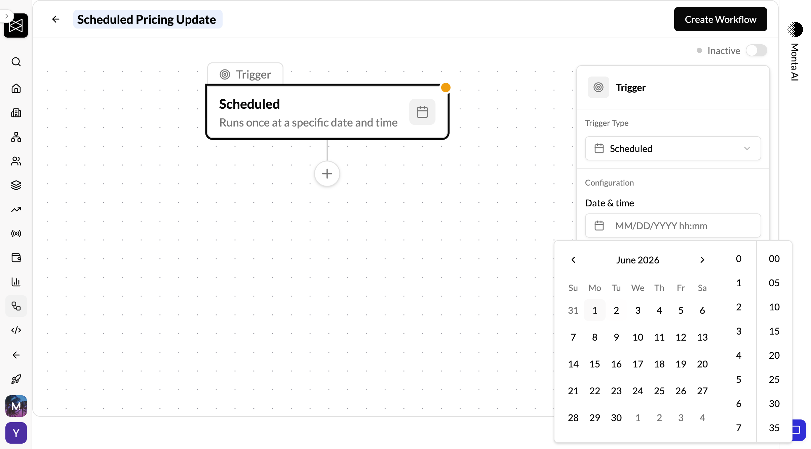
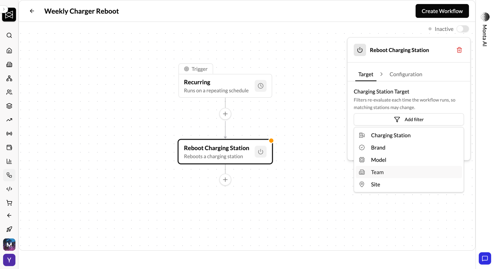
Watching it ship without me in the room was the best proof the infrastructure worked.
What I'd do differently.
The hardest part of first-in-role leadership isn't building the thing. It's building trust while building the thing. You're being evaluated constantly while operating without precedent. The answer is to lead by example early, delegate fast, and let the team's output speak for the org's value.
On the infrastructure side: governance ships with capability. Always. The AI monitoring system should have launched with the pipeline. The PR quality gates should have been defined before the first designer opened a repo. The Ambassador programme should have preceded the tool rollout, not followed it. Speed created real problems: the designer-to-code pipeline scaled velocity faster than oversight could follow. Shipping capability and governance in parallel isn't a nice-to-have; it's the architecture.
"The biggest challenge stopped being how do we get people to use AI, and became where should we not use AI."Kevin Hawkins · VP Product Experience, Monta